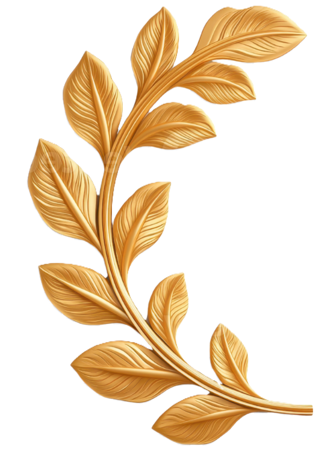
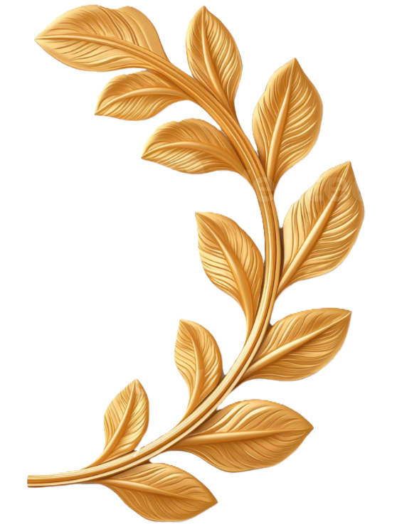
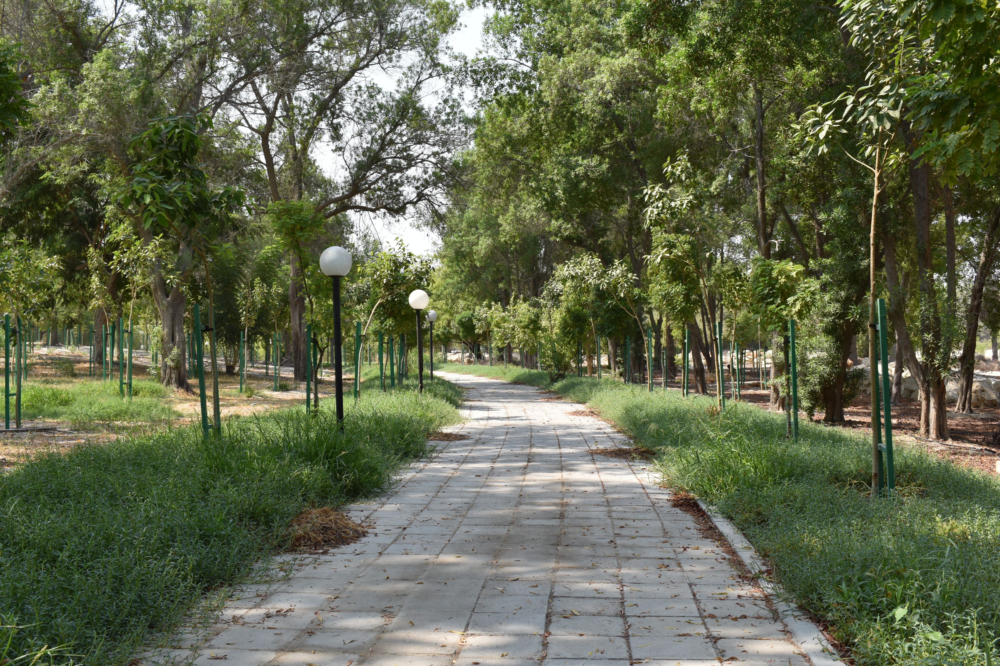
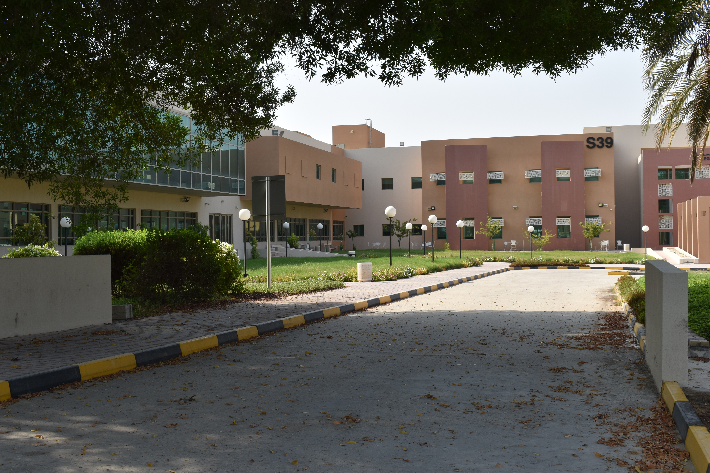
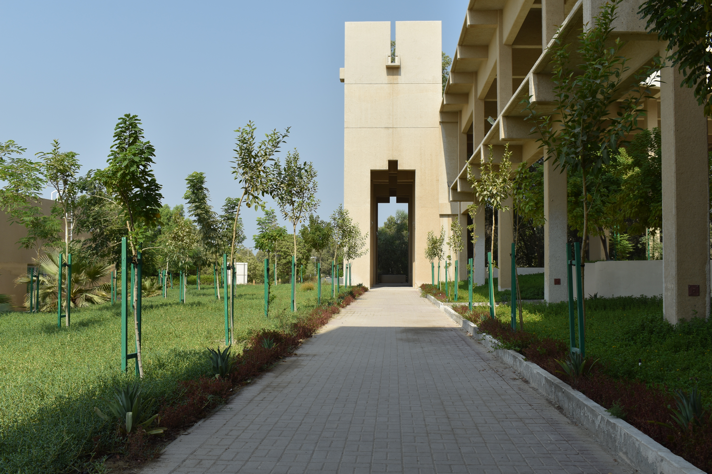
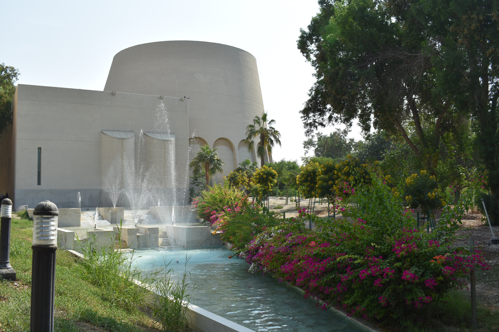

UOB Landscapes
A collaborative platform uniting biology, engineering, and technology to create a sustainable and data-driven campus environment, where science meets design.

The University of Bahrain Landscapes initiative envisions a collaborative platform where science, engineering, and technology unite to create a sustainable and data-driven campus environment. By integrating biological research, landscape design, and digital innovation, the project aims to cultivate a living repository of plant data and design proposals that evolve with time. This ongoing collaboration lays the groundwork for a greener, smarter, and more connected university landscape that reflects the harmony between nature, knowledge, and technology.






Landscape in UOB offers
Scientific Research
Biologists from the College of Science meticulously document indoor plant species, creating a comprehensive database that serves as a valuable resource for botanical research and education.
Engineering Excellence
Landscape engineers from the College of Engineering design innovative outdoor and indoor landscaping proposals with detailed plans and 3D models that bring visions to life.
Digital Innovation
Software engineers from the College of IT develop and maintain the platform, ensuring seamless data integration and user-friendly access to all landscape information.
Future Growth
Both biological surveys and engineering designs are part of an ongoing process, with future expansions planned to cover additional locations and introduce new proposals across campus.
Our Methods & Practices
How we maintain and enhance the UOB campus landscape through sustainable methods and innovative services.
+ Irrigation Techniques
We employ smart irrigation methods across campus, including drip irrigation and scheduled watering systems that minimize water waste while keeping our landscape healthy year-round.
Our team monitors soil moisture levels and adjusts watering schedules seasonally to ensure optimal plant health while conserving water resources.
+ SDG in Daily Operations
Our daily landscaping operations are guided by the UN Sustainable Development Goals. Every decision we make on campus reflects our commitment to a greener and more sustainable environment.
We contribute to:
SDG 3 by maintaining green spaces that support well-being.
SDG 4 by engaging students in hands-on research and training, SDG 6 by using smart irrigation to minimize water waste.
SDG 11 by creating a livable and sustainable campus.
SDG 13 by planting species that absorb CO₂ and
reduce heat.
SDG 15 by documenting and protecting campus biodiversity.
+ Portable Plants Service
We offer a portable plants service for campus events and occasions. Our collection of plants in portable pots is carefully selected for their visual appeal and suitability for both indoor and outdoor settings — from formal ceremonies and outdoor gatherings to department exhibitions and special university occasions.
Our team handles the full process, from selecting and arranging the right plants to delivering and retrieving them after the event, ensuring a seamless experience for every occasion. Browse our
Meet Our Team
University of Bahrain students contributing through hands-on training in biological research, landscape design, and software development.
College of Science
Biologists
College of Engineering
Landscape Engineers
College of Information Technology
Software Engineers
Computer Scientists